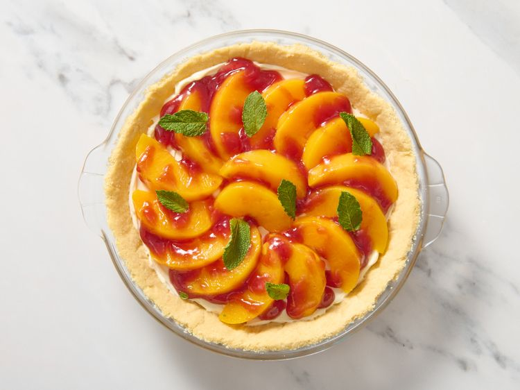

How to Make Peach Surprise Pie

DESCRIPTION
From pies and succulent cobblers to buttery crisps, the world of baked peach desserts is vast—but it's also more-or-less similar, bound together with flour, butter, and sugar. While you can't go wrong with the classics, we've got good reason to try out something a little different. This particliar pie recipe is unique: Not only is easy to make and completely no-bake, but it's also a two-time peach festival recipe winner. Find out what makes it so good and why it has peach dessert purists coming back for more.
IGREDIENTS
- 1 (9 inch) pie crust, baked
- 2 (8 ounce) packages cream cheese, softened
- ¼ cup white sugar
- ½ teaspoon vanilla extract
- 2 cups sliced peaches, drained
- ¼ cup raspberry preserves
- 1 teaspoon lemon juice
DIRECTIONS
- Gather all ingredients.
- Combine softened cream cheese, sugar, and vanilla extract in a medium mixing bowl. Mix until smooth.
- Spread onto bottom of baked pie shell. Chill several hours or overnight.
- Before serving, top cream cheese layer with drained peach slices.
- Mix raspberry preserves with lemon juice until well combined. Spoon over peaches. Garnish with mint sprigs.
Home